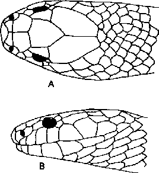

|
Digitized Inventory of Animal Resources: Reptilia ( Snakes ) Principal Investigator: Dr. R. J. B Alfred, Co-Investigator: Dr. Rama Krishna, Contributed by:
Dr. R.C.Sharma |
Bungarus caeruleus (Schneider 1801)
Taxonomic
Details
----- Scientific Name
----- Classification
----- Synonyms
----- Common Names
Other
Biological Details
----- Habit and
Habitat
----- Distribution
---------- Extent of
Occurrence
---------- Area of occurrence
---------- Altitude
---------- Population
-----
Conservation Status
-----
Diagnostic
Features
-----
Breeding system
Miscellaneous
Information
Literature
This most important family of terrestrial and arboreal poisonous snakes comprises about 41 genera and 183 species distributed in whole world excluding the New Zealand and Madagascar. Elapid snakes are well distributed in all the tropical and subtropical countries of the world. They are well established in Australia, as majority of snakes available in this region, belong to this family. During recent times family Elapidae is missing in Europe but its Miocene and Pliocene fossils have been recovered from France (Hoffstetter, 1939). About 4 genera i.e. Bungarus, Naja, Ophiophagus and Callophis inhabit India and adjoining countries. Like Hydrophiidae, the Elapidae includes snakes with proteroglyphous condition of teeth (the poison fangs are situated at the anterior tip of the maxilla). The family includes Cobras, King Cobra, Kraits, Mambas and Coral snakes. The main chracters are : the snakes with long, slender, cylindrical body; the head may or may not distinct from the neck; the tail is quite long, cylindrical and tapering to a point; the dorsal body scales are comparatively small; rhomboidal, overlapping ventrals are transversely enlarged to form a single row; eyes are shining and relatively large; teeth are recurved, pointed; maxilla is short, bears teeth, teeth are present on pterygoid and palatine also; the anterior maxillary tooth has been transformed into a large erect poison fang, connected with poison gland; coronoid bone is not present in the mandible; maxilla is loosely connected with the ectoptergoid; ectoptergoid extends posteriorly above the pterygoid, which usually reaches to the quadrate; vestings of pelvis are available; the anterior skeletal elements are flexibly movable in cranium; premaxilla and maxilla are not united; prefrontal and nasal are not united; supratemporal moves freely on the cranium; quadrate is long and slants backwards to increase the gape of the jaws.
kraits
Genus 52. Bungarus Daudin 1803
This genus includes the snakes with following characters : Head not distinct from neck; head shields are normal; loreal shield is not available; eyes are moderately large or small, with round pupil; maxillary bone never extends, beyond the palatine; poison fangs, which are fixed, hollow maxillary teeth are followed by 2-4 small solid teeth; body scales are smooth, in 13-19 rows; vertebral row of scales are moderately enlarged in most of the species, but it is strongly enlarged in lividis; tail is moderately long, subcaudal scales are single or many of them divided; dorsal vertebrae are with strong lateral expansion, which are connected with the pre-and post-zygapophysis. About 12 species have been reported from Indonesia to Taiwan and in southern Asia, southern China, Pakistan and India.
Key to the species of the Genus Bungarus
I. Terminal subcaudal paired, the others either paired or single.
A. Scales in 13 rows flaviceps.
B. Scales in 15 rows bungaroides.
II. All subcaudals single.
A. Tail blunt, ending obtusely finger like; a prominent ridge down the back and tail; back with alternate bands of black and yellow fasciatus.
B. Tail ending in a point; no ridge down the back.
a. 2nd supralabial as broad as the 3rd, back with narrow white cross-bars arranged more or less distinctly in pairs, most distinct posteriorly; scales in 15 or 17 rows throughout, rarely in 17 : 19 : 17 rows caeruleus.
b. 2nd supralabial decidedly narrower than the third.
1. Uniform black above; scales in 15 rows throughout.
i. Vertebral scales narrow, not or feebly enlarged, longer than broad, shaped like the adjacent scales in the middle of the body; subcaudals 35-43 lividus.
ii. Vertebral scales strongly enlarged, broader than long in the middle of the body; subcaudals 47-57. niger.2. Not uniform black above; back with cross-bars.
i. Scales in 19 or 17 rows at mid-body; body compressed walli.
ii. Scales in 15 rows throughout; body not compressed.
Back with 11-14 very broad, white, black-spotted cross-bars, tail with 2-3; belly uniformly white magnimaculatus
Back with alternating black and white bands; belly with black marks or cross-bars, sometimes absent in the juvenile ceylonicus.
Back with 27-48 white cross-bars; tail with 9-13; belly uniformly white multicinctus.
Scientific Name : Bungarus caeruleus (Schneider 1801)
Family : Elapidae
Boie 1827
Classification: Genus . Bungarus Daudin1803
Synonyms:
Common Names:
HABIT & HABITAT Strongly nocturnal snake confined to grassland; semi arid areas with alluvial soils; rocky areas, marshes and gardens. The breeding season is from April to July. The main food of Kraits include the snakes; small mammals, frogs, toads, lizards and fish can also be taken if snakes are not available. They lay 6-10 eggs, which are deposited in holes in ground.
Distribution: Gujarat : Gandhinagar, Bhavnagar, Dangs, Mehsana, Panchmahals and Bharuch district; West Bengal, Peninsular India, Rajasthan, Punjab, Haryana, Uttar Pradesh, Madhya Pradesh, Orissa, Maharashtra, Andhra Pradesh, Karnataka, Tamil Nadu and Kerala.
Conservation status: Fairly Common
Length : The maximum recorded length of common Krait is 1500 mm.,
Body : body is cylindrical, slightly tapers anterorly; head is not distinct from the neck, it is flat and with a blunt snout. The hemipenis extends up to the 6th-9th caudal plate; the distal one-third or half is calyculate, the remainder portion of the penis is with spines; the calyces are smallest near the tip of the penis and increase in size and they approach the spine bearing area; each cup is with stiff ends; the bifurcation of the sulcus is almost at the middle of the calyculate area or the junction of the calyculate and spinose areas and the lips of the sulcus are always with the small spines, which are distributed uniformly in the complete area.
Scales : Scales round the body are in 15 or 17 rows; ventral shields are from 194-234; subcaudal shields are 42-52;
Colouration : Dorsal coloration is jet black to dark-brown, with a series of 3-9 vertebral spots on neck and anterior most part of the body followed by 38-56 narrow, transverse bands or spots, generally in pairs; upper labials are yellowish or whitish; ventrum is whitish.
Breeding Biology :

Bungarus
caeruleus (Schneider) : Head : A. Dorsal view B. Lateral view